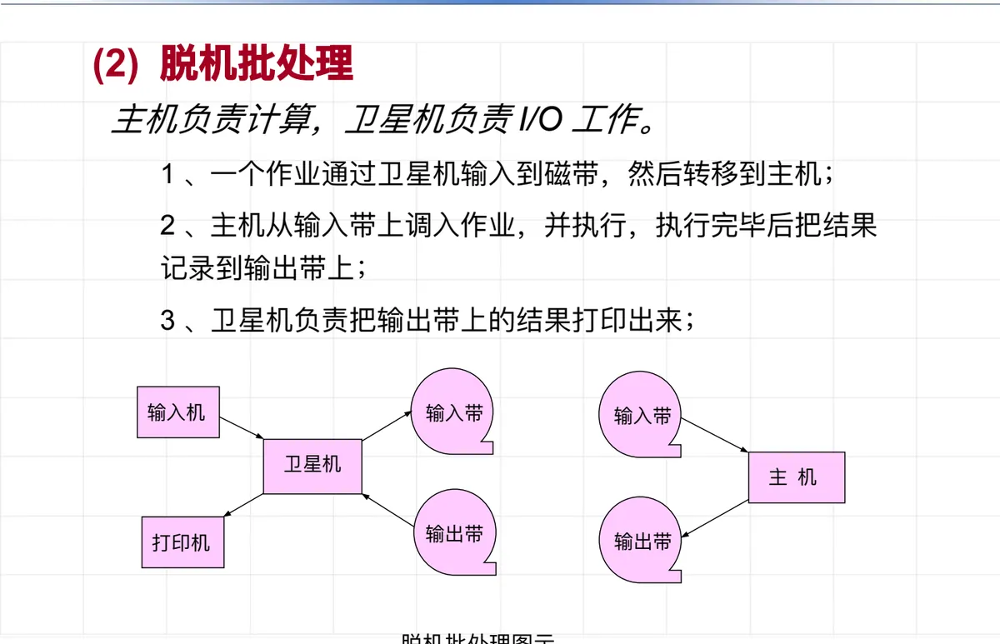
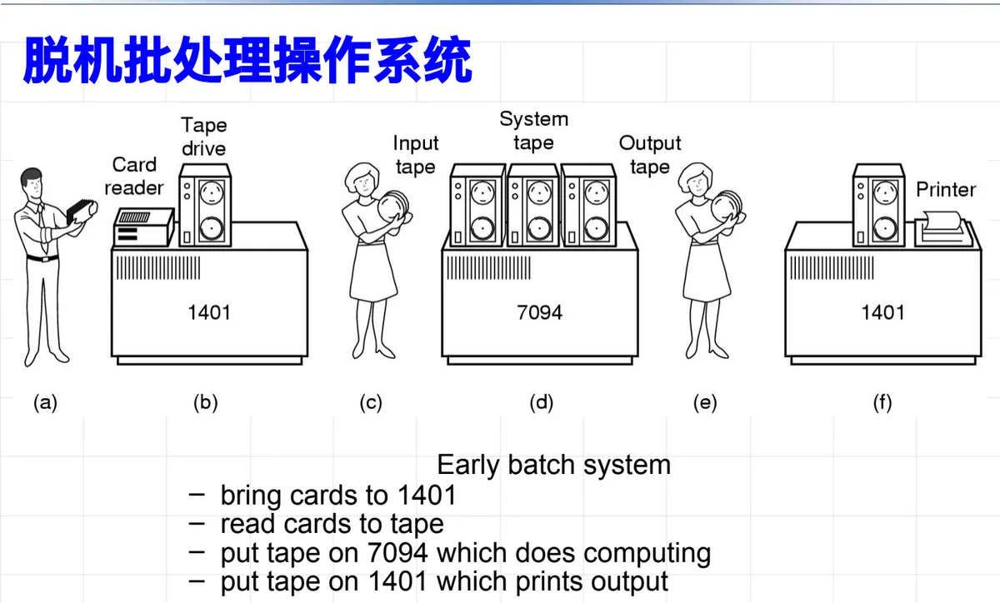
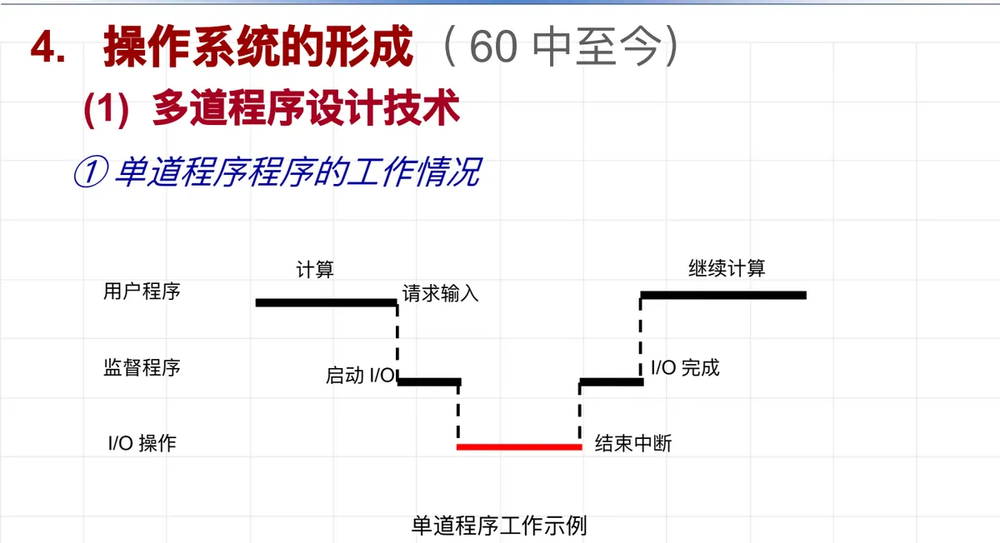
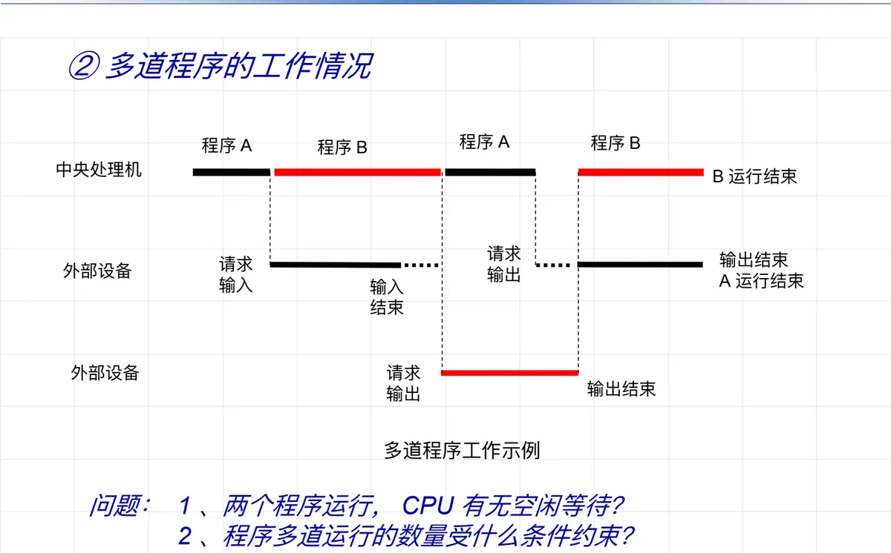
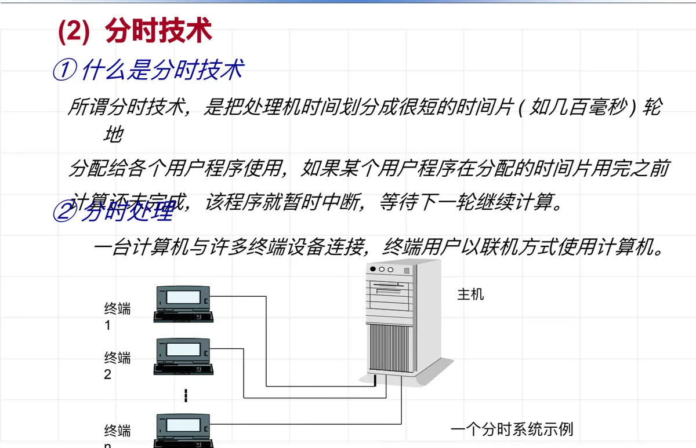
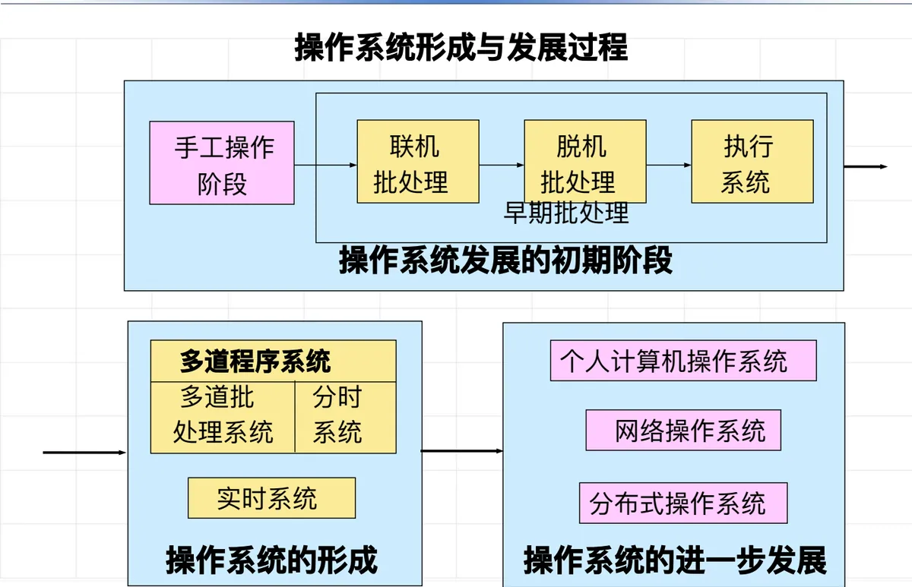
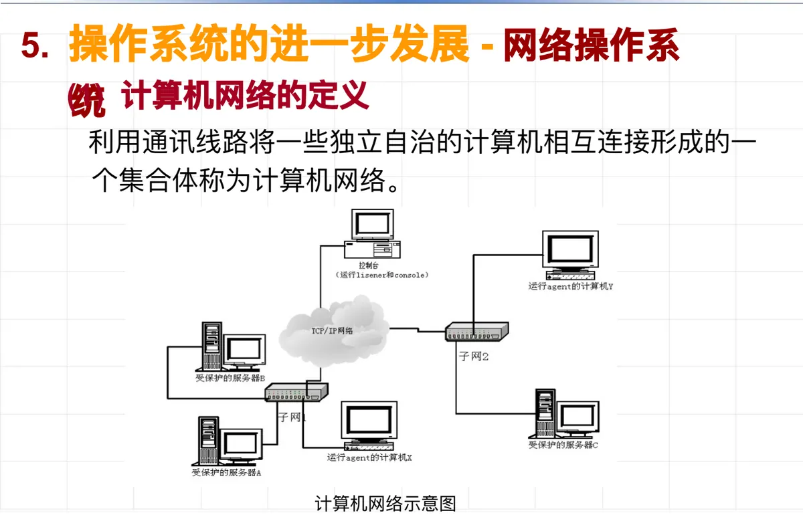

操作系统原理 · 第 1 章 绪论
1.2 操作系统的形成与发展
这一节讲操作系统的来路。它不是一个早上被设计出来的，而是被两股力量推着长出来的：一边是硬件元件工艺按「代」推进，机器越来越快；另一边是人对使用方式的要求越来越高——从排队上机到成批自动过渡，再到多道、分时。贯穿全节的线索只有一个：人机速度不匹配与资源利用率这对矛盾，以及人们用什么办法一次次化解它。
1. 计算机元件工艺的四代演进
操作系统的形态首先取决于它所依附的硬件。按所用元件的不同，计算机硬件的发展大致分成四代：
- 电子管时代（1946—1958）；
- 晶体管时代（1958—1964）；
- 集成电路时代（1965—1970）；
- 大规模集成电路时代（20 世纪 70 年代中期至今）。
再往后，计算机沿着微型化、并行化、网络化、智能化几个方向继续发展。硬件越来越快、越来越便宜，才有了让多个程序同时驻留内存、让多个用户同时上机的物质基础；而硬件的每一次提速，也都会把人机之间原有的平衡重新打破一次——这正是下面几段要讲的。
2. 手工操作阶段（1946—1950）
最早的计算机没有操作系统，甚至没有管理软件。计算机系统的资源管理和控制完全由人工负责，一个用户要从头到尾亲自动手：
- 人工把程序用穿孔机穿制在卡片或纸带上；
- 把卡片或纸带装上输入机，把程序和数据输入计算机；
- 启动计算机运行，等待计算完毕；
- 计算结果从打印机或卡片机上输出。
（1）特点：无任何管理软件
- 人工干预多、手工操作多，浪费处理机时间，而且容易发生差错；
- 独占性：用户上机就独占全机资源，资源利用率不高，系统效率低下；
- 串行性：程序运行前的准备时间过长，准备、计算、输出必须依次进行。
（2）问题：人机矛盾
上面三点合起来，就是早期计算机使用中的核心问题——人机矛盾：机器的运算速度以每秒多少万次计，而人的操作以分钟计，两者相差几个数量级。CPU 越快，人工操作占用的时间相对于机器有效运行时间就越显眼：
| 机器速度 | 程序处理 所需时间 | 人工操作 时间 | 时间之比 |
|---|---|---|---|
| 1 万次/秒 | 1 小时 | 3 分钟 | 1 ： 20 |
| 60 万次/秒 | 1 分钟 | 3 分钟 | 3 ： 1 |
读这张表要抓住的是趋势而不是具体数字：当机器速度提高 60 倍，程序本身只需 1 分钟就算完，而人工装卸纸带仍要 3 分钟，比值从 1 ： 20 翻转到 3 ： 1。也就是说，机器越快，人工操作拖的后腿越严重，靠人来「伺候」机器的路子走不通了。
3. 批处理阶段（50 年代末—60 年代中）
为了缓和人机速度严重不匹配的矛盾、提高资源利用率，思路很自然：去掉人工干预，实现作业的自动过渡。人们开始用软件代替操作员的一部分工作——编制一小段常驻内存的核心代码，称为监督程序（monitor），由它负责把一批作业依次自动送进机器运行。这个监督程序，就是操作系统的萌芽。
（1）联机批处理
最早的做法是联机批处理，工作流程是：操作员集中一批用户提交的作业，由监督程序把这批作业从纸带或卡片机输入到磁带上；输入完成后，监督程序自动把磁带上的第一个作业装入内存，并把控制权交给作业；作业执行完成后，监督程序打印输出结果，再从磁带上调入第二个作业到内存执行。如此循环，直到一批作业全部处理完。
- 联机的含义是：CPU 直接操作输入/输出设备，主机自己管进出；
- 问题：CPU 高速与 I/O 慢速的矛盾依然存在，输入输出期间 CPU 只能干等，整个过程是串行的；
- 解决办法：把 I/O 工作交给一台专门的卫星机去做，主机专管计算——这就是「脱机」。
（2）脱机批处理
脱机批处理把分工划清楚：主机负责计算，卫星机负责 I/O 工作。一个作业的处理过程分三步：
- 作业先通过卫星机输入到磁带（输入带），再把磁带转移到主机；
- 主机从输入带上调入作业并执行，执行完毕后把结果记录到输出带上；
- 卫星机负责把输出带上的结果打印出来。

当时的典型配置就是这样运转的：把成叠的卡片送到 1401 机读成磁带，再把磁带装到 7094 机上做计算，算完后把结果磁带拿到 1401 机上打印输出。两台机器各司其职，谁也不干等谁。

脱机批处理的特点与遗留问题可以对照着看：
- 特点：主机与卫星机并行操作，各部件不再互相干等；作业成批自动过渡，增强了保护能力；
- 问题：调度仍不灵活，批与批之间还需要人工干预，保护问题也没有彻底解决；
- 解决办法：转向硬件技术的发展——通道与中断。
（3）通道与中断：把 I/O 交给硬件
通道与中断相当于用硬件实现的「卫星机」，它们出现之后，脱机批处理里的卫星机就被省掉了。
通道是一种专用处理部件，作用类似于卫星机：它控制一台或多台外部设备，在外设和主存之间传输数据。通道受 CPU 控制，但一旦启动就能独立于 CPU 运行，和 CPU 并行工作。
中断指 CPU 收到外设完成的信号后，停止当前工作去处理这个信号，处理完毕再回到原来的工作点继续工作。有了中断，CPU 才知道「I/O 已经做完了」，不必反复去查询外设的状态。
4. 执行系统
借助于通道与中断技术，I/O 的控制权回到主机手里，由主机来控制 I/O 设备工作。原来的监督程序因此要挑两副担子：既负责调度作业自动运行，又提供 I/O 控制功能。这样常驻主存的监督程序，就升级为执行系统。
执行系统的特点：
- 利用通道和中断技术，省去了卫星机，实现了主机和 I/O 设备的并行操作，解决了高速处理器与低速设备之间的矛盾；
- 系统统一负责用户的 I/O 传输工作，增强了对不合法 I/O 命令的保护能力。
这里有一个值得留意的转折：操作系统从「安排作业顺序」的调度者，扩展成了「替用户管理设备」的资源管理者。后面要讲的资源管理功能，源头就在这一步。
5. 操作系统的形成（60 年代中至今）
执行系统解决的是主机与 I/O 设备之间的等待问题，但还没有解决CPU 与 I/O 之间的等待。真正的突破来自两项技术：多道程序设计技术和分时技术。
（1）从单道程序到多道程序
先看单道程序的工作情况。内存里只有一道用户程序，加上常驻的监督程序。用户程序需要输入数据时，它发出「请求输入」、启动 I/O；I/O 操作期间 CPU 无事可做，只能等；I/O 完成产生结束中断，用户程序才继续计算。

再看多道程序的工作情况。内存中同时放入程序 A 和程序 B，让它们相互穿插地使用 CPU 和外部设备：A 请求输入时，CPU 转去运行 B；B 请求输出时，CPU 再回来运行 A。这样从整体上看，CPU 和外部设备都在不停地工作。

对照两图，课件留下了两个问题，答案正是多道程序设计的要点：
- 两个程序同时运行时，CPU 有无空闲等待？——只要搭配得当，一个程序等 I/O 时另一个程序就能占用 CPU，CPU 基本不再空等；
- 程序多道运行的数量受什么条件约束？——最基本的是主存容量：几道程序就要在主存里同时放下几道程序的代码和数据；此外还受外设数量、系统开销等因素制约。
（2）什么是多道程序设计技术
多道程序设计技术指在计算机主存中同时存放几道相互独立的程序，这些程序在管理程序控制之下相互穿插地运行；当某道程序因某种原因不能继续运行下去（如等待外部设备传输数据）时，管理程序便将另一道程序投入运行。
多道运行有三个特征，其中后两条是理解「宏观」与「微观」的关键：
- 多道：主存中同时存在几个相互独立的程序运行；
- 宏观上并行：每个作业都已开始进入系统运行，可以在不同的部件上进行操作，都在向前推进，但都尚未完成；
- 微观上串行：在任一时刻，单处理机上运行的作业只有一个。
多道程序设计还顺带改变了用户使用计算机的方式。早期是脱机操作方式——这里的「脱机」说的是用户使用计算机的方式：程序运行过程中用户不能直接实施控制，必须一次性把程序和数据一起提交给系统，然后等着拿运行结果（打印输出）。人们自然希望反过来，采用联机操作方式：直接控制程序的运行，通过终端向计算机发出控制命令；系统运行时输出必要信息，用户根据这些信息决定下一步操作，用户和计算机之间可以「交互会话」。这种需求催生了分时技术。
（3）分时技术
分时技术是把处理机时间划分成很短的时间片（如几百毫秒），轮流分配给各个用户程序使用；如果某个用户程序在分配的时间片用完之前计算还未完成，该程序就暂时中断，等待下一轮继续计算。由于轮转得足够快，每个用户都感觉自己「独占」着一台计算机。与之配套的分时处理方式是：一台计算机与许多终端设备连接，终端用户以联机方式使用计算机。

分时技术有两条标志性的实践记录：1962 年出现的第一个分时系统 CTSS，运行在 IBM 7094 机上，支持 32 个交互式用户同时工作；1965 年在美国国防部支持下，MIT、BELL 和 GE 公司联合开发「公用计算服务系统」，支持波士顿地区的分时用户，这就是 MULTICS（MULTiplexed Information and Computing Service）。MULTICS 引入了许多现代操作系统概念的雏形——分时处理、远程联机、段页式虚拟存储器、文件系统、多级反馈调度、保护环安全机制、多 CPU 管理、多种程序设计环境等，对后来的操作系统设计影响极大。
回过头看这一段的成果：分时操作系统和多道批处理操作系统的出现，标志着操作系统的初步形成。
（4）形成与发展的总体脉络
把前面几段串起来，操作系统从无到有的过程可以画成一条链：

这条链的前半段（手工操作 → 联机批处理 → 脱机批处理 → 执行系统 → 多道程序系统）讲的是「操作系统的形成」，后半段讲的是「操作系统的进一步发展」——也就是下一节要按类型逐一展开的内容。
6. 操作系统的进一步发展
（1）个人计算机操作系统
随着微电子技术的发展，个人计算机（PC，Personal Computer）出现于 20 世纪 70 年代。机器从机房走向桌面，操作系统的服务对象也从「一批批提交作业的用户」变成了「一个人对着屏幕操作」，界面友好、响应及时、易于安装维护随之成为新的设计重心。
（2）网络操作系统
先看它赖以存在的基础。计算机网络是利用通讯线路将一些独立自治的计算机相互连接形成的一个集合体——「独立自治」是关键：各台计算机有自己的处理能力和资源，只是被连接起来以便交换信息、共享资源。

运行在网络环境中的操作系统就是网络操作系统。它除了具备一般操作系统应有的功能模块（如系统核心、设备管理、存储管理、文件系统等）之外，还要增加一个网络通信模块，用于支持本机与其他计算机之间的通信和资源共享。上面图 6 中列出的实时系统、分布式操作系统等，也都是在这一时期分化出来的系统类型。
本节小结
- 硬件元件工艺经历电子管、晶体管、集成电路、大规模集成电路四代，并向微型化、并行化、网络化、智能化发展；硬件的每一次提速都会重新打破人机之间的平衡；
- 手工操作阶段（1946—1950）没有任何管理软件，人工干预多、独占、串行，核心问题是人机矛盾——机器越快，人工操作占用时间的相对比例越大（1 万次/秒时为 1 ： 20，60 万次/秒时变为 3 ： 1）；
- 批处理阶段的出路是去掉人工干预：监督程序常驻内存实现作业自动过渡，是操作系统的萌芽。联机批处理让 CPU 直接管 I/O，暴露了 CPU 与 I/O 的速度矛盾；脱机批处理改由卫星机负责 I/O，主机与卫星机并行，但调度不灵活、仍需人工、保护不足；
- 通道与中断把 I/O 交给硬件，省掉卫星机，监督程序升级为执行系统——它既调度作业又控制 I/O，操作系统从此承担起资源管理的职责；
- 多道程序设计技术让主存中同时存放几道程序、穿插运行，特征是多道、宏观上并行、微观上串行，道数主要受主存容量约束；分时技术把处理机时间切成时间片轮转给各终端用户，满足联机交互的需求（CTSS 1962、MULTICS 1965）；二者的出现标志着操作系统的初步形成；
- 此后进一步发展出个人计算机操作系统、网络操作系统（一般功能模块 + 网络通信模块）、实时系统、分布式操作系统等类型，下一节按基本类型逐一展开。